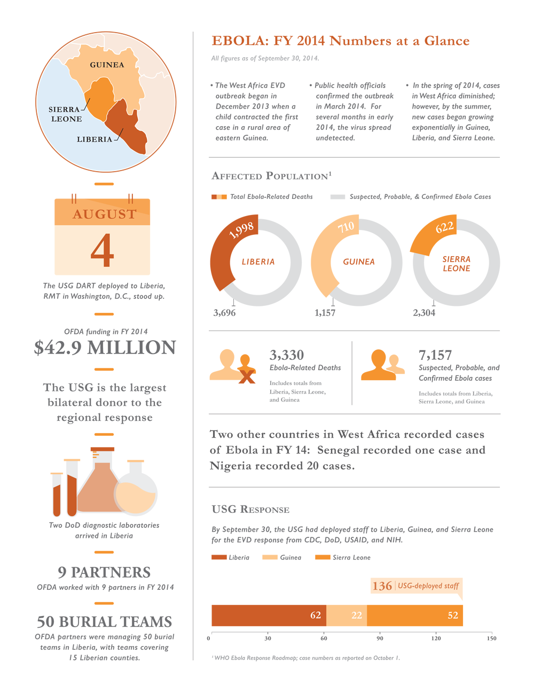

Infographic created to illustrate USAID's Office of U.S. Foreign Disaster Assitance's (OFDA) reponse to the Ebola outbreak in West Africa. The infographic was created for OFDA's 2014 Annual Report. The annual report is a 52-page book that highlights the office's programs and financials from the fiscal year. The entire report can be found here
